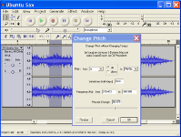
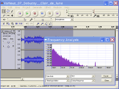
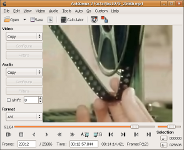
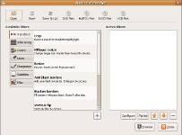
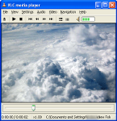
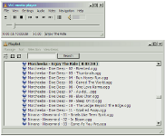

หมวดซอฟต์แวร์ :
สนับสนุนโดย :
มัลติมีเดีย
Audacity
โปรแกรม Audacity เป็นโปรแกรมตัดต่อเสียง มีความสามารถในการ บันทึก เล่น ผสม หรือ ใส่เสียง effect ต่างๆได้ Audacity ทำให้คุณสามารถตัดต่อเสียงด้วยการ Cut, Copy, Paste, Undo ได้ไม่จำกัดครั้ง และ ผสมเสียงเข้าด้วยกัน โปรแกรมสามารถบันทึกไฟล์ได้หลาย format ประกอบด้วย WAV, Ogg Vorbis และ AIFF หรือจะใช้ fotmat ของ Audacity ก็ได้ 
{kind=link}
{kind=link}
Avidemux
โปรแกรมติดต่อวิดีโอขนาดเล็กรองรับไฟล์วิดีโอในฟอร์แมทต่างๆ ได้หลากหลาย เช่น MPEG-1,MPEG-2,MPEG-4, AVI, H.264, 3GP เป็นต้น Avidemux เปรียบเทียบได้กับ Virtual Dub หรือ Virtual Dub Mod รูปแบบการใช้งานคล้ายคลึงกันแต่ Avidemux สนับสนุนไฟล์ฟอร์แมทต่างๆ ได้หลากหลายกว่าอีกทั้งยังสามารถทำงานบนระบบปฏิบัติการ 64 บิตได้เป็นอย่างดี 
{kind=link}
{kind=link}
VLC
โปรแกรมดูหนังฟังเพลงที่สามารถเล่นไฟล์เสียงและวีดีโอได้หลากหลายฟอร์แมต เป็นไปได้มากที่คุณจะพบไฟล์ที่ไม่สามารถเล่นได้ด้วยโปรแกรม media player ตัวอื่น แต่เล่นได้ด้วย VLC นอกจากไฟล์มัลติมีเดียแล้ว VLC ยังสามารถเล่นมีเดียจากอินเทอร์เน็ตผ่านโปรโตคอลต่างๆ หรือแม้แต่สตรีมมีเดียจากเครื่องคุณเอง 
{kind=link}
{kind=link}